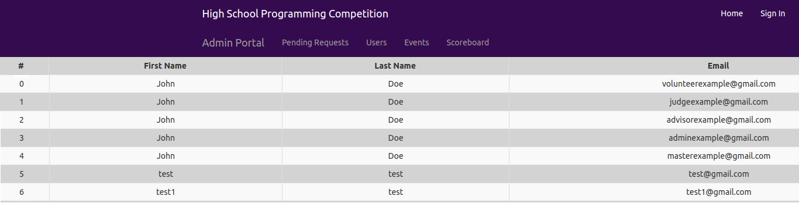

High School Programming Competition
Client: Kansas State University: Computer Science Dept.
This application is being built from the ground up as a senior design project. Every fall, the Kansas State University College of Engineering hosts a programming competition for high school students at various levels. Currently, everything logistical is being handled on paper or is being entered manually into a spread sheet. This website seeks to automate student and worker registration, report scores in real time to judges and administrators, and store information and performance statistics from previous events to show progress.
The program itself is a true full stack application. The UI is being developed in React with various components from the React-Bootstrap library. The API is being written in Javascript using the Node.js framework, The quering of data is being acomplished with Express, and the database is an image of Microsoft SQL Server 2017 being ran in docker. The primary development environment is Ubuntu linux.